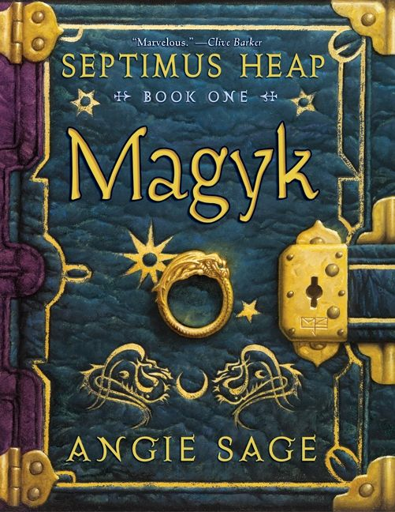
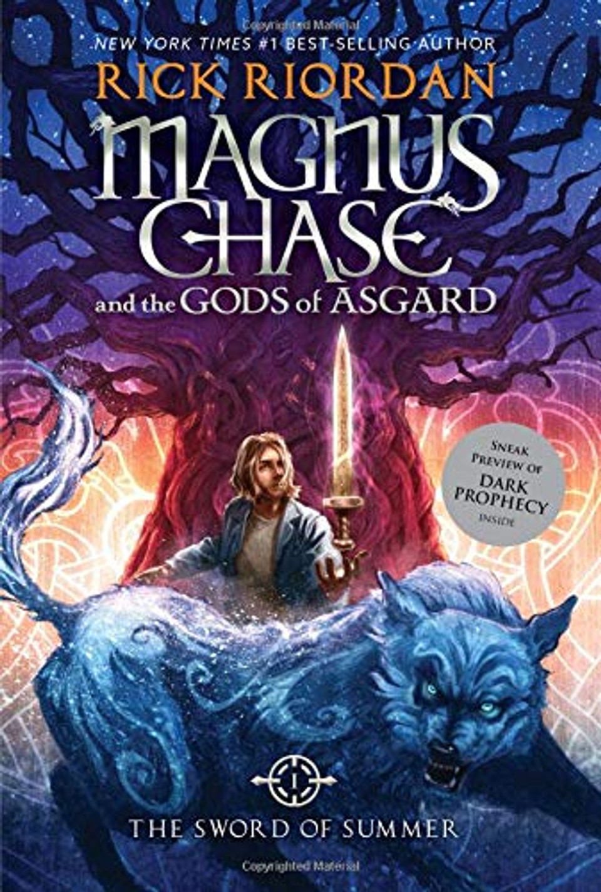

Articles

<main id="maincontent" class="main-content">
        <section class="articles">
            <article class="book-review">
                <div class="details">
                    <p><time datetime="2022-07-05">July 5, 2022</time></p>
                    <p>Age: 10-14</p>
                    <p>Genre: Fantasy</p>
                    <p>Rating: ⭐⭐⭐⭐</p>
                </div>
                <div class="content">
                    <h3>Septimus Heap Book One: Magyk</h3>
                    
                    <p>If you enjoy stories about seventh sons of seventh sons and magyk this is the book for you.</p>
                </div>
            </article>
            <article class="book-review">
                <div class="details">
                    <p><time datetime="2021-12-12">December 12, 2021</time></p>
                    <p>Age: 12-16</p>
                    <p>Genre: Fantasy</p>
                    <p>Rating: ⭐⭐⭐⭐</p>
                </div>
                <div class="content">
                    <h3>Magnus Chase Book One: Sword of Summer</h3>
                    
                    <p>The anticipated new novel by Rick Riordan. After Greek mythology (Percy Jackson), Greek/Roman (Heroes of Olympus), and Egyptian (Kane Chronicles), Rick decides to try his hand with Norse Mythology, and the end result is good.',</p>
                </div>
            </article>
            <article class="book-review">
                <div class="details">
                    <p><time datetime="2022-2-12">Feb 12, 2022</time></p>
                    <p>Age: 12-16</p>
                    <p>Genre: Fantasy</p>
                    <p>Rating: ⭐⭐⭐⭐⭐</p>
                </div>
                <div class="content">
                    <h3>Belgariad Book One: Pawn of Prophecy</h3>
                    
                    <p>A fierce dispute among the Gods and the theft of a powerful Orb leaves the World divided into five kingdoms. Young Garion, with his "Aunt Pol" and an elderly man calling himself Wolf --a father and daughter granted near-immortality by one of the Gods -- set out on a complex mission.',</p>
                </div>
            </article>
        </section>
        <aside class="filters">
            <h2>Filters</h2>
            <p>(Filters will go here)</p>
        </aside>
    </main>